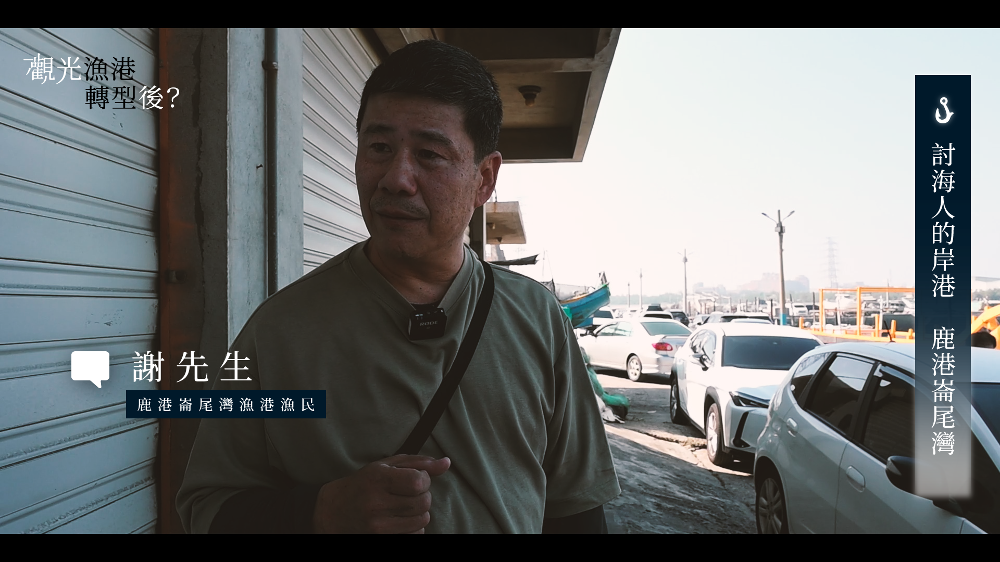

於實習新聞媒體《中正E報》擔任總編輯與記者，深入在地，發掘社會議題，獨立完成 13 則文字與影音新聞專題，其中內容涵蓋醫療勞權與地方創生。

《中正E報》為中正大學傳播學系的獨立實習媒體。在近一年的實習期間，我經歷了總編輯、美術編輯與記者的輪調，從零開始參與新聞產製的每一個環節。
擔任記者期間，我從社會議題切入，製作相關影音報導。從前期企劃、約訪、實地拍攝，到後期的剪輯、字幕與配音，這些經歷不僅訓練了我的影音敘事能力，更培養了我對社會議題的敏銳度。
以下為我在《中正E報》期間製作的精選影音新聞報導。點擊播放即可觀看完整影片內容。
2023年台灣醫療工會聯合會舉辦「醫療勞權大遊行」，反映了現階段醫療工作環境問題。深入探討「護病比」訴求，揭露護理人員人力不足導致無法負荷的狀況。
用一首恰似你的溫柔，扣動老大人們的心弦。「三味曲走唱團」突破一般社區衛生教育演講的形式，他們選擇用音樂表演吸引老年人的注意，並融入衛教宣導。這群音樂老師和大學教授組成的樂團，透過歌曲喚起長者的記憶與感動，不僅治療了他們，更療癒了自己。
新港奉天宮是位於嘉義縣重要的信仰中心之一，奉天宮中的轎班會「開臺媽祖會」每年都會籌備新港重要的慶典——元宵媽祖遶境。不同於傳統的廟會活動，他們還融入了更多創新的現代元素，像是街舞和社群平臺直播等，以此來吸引年輕世代的注意。
全臺灣約有300 座漁港，面臨全球氣候變遷和漁業資源減少的雙重壓力。特別是位於西部的漁港，普遍面臨泥沙淤積的挑戰。有些漁港為因應這些問題，逐漸轉型為觀光漁港。然而，從傳統漁港轉型為觀光漁港後，是否能夠為當地的商家和漁民帶來新的機會和改變呢？
嘉義市政府為了打造適合寵物居住的城市，在2023 年5月正式啟用了第一座寵物友善公園「綠映水漾公園」，提供狗狗可以不繫繩自由奔跑的場地，並且設置了各種寵物設施。但是近期卻有民眾反映公園內設置的狗便清潔袋，並沒有充足的量可以使用。
嘉義市部分巷弄過於窄小導致垃圾車難以進入，年長者需仰賴協助。探討環保局清潔隊如何綜合考量居民需求和地形複雜性，提出提早在巷口等待的對策。